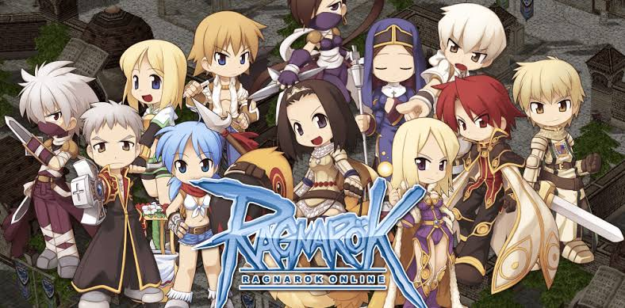

TOP 10 JOGOS RETRÔ
Tetris
Resident Evil 4
Street Fighter II
Pac-Man
Super Mario World
Team Fortress 2
Super Mario 64
Tibia
Final Fantasy VII
Ragnarok Online
Ragnarok Online

Ragnarök Online (em coreano: 라그나로크 온라인) é um MMORPG
desenvolvido pela empresa sul-coreana Gravity Corp. Os cenários do
jogo foi baseado, inicialmente, no manhwa Ragnarök de Lee Myung-Jin.
Ragnarök Online foi o primeiro jogo online coreano a ser exportado com
sucesso a outros países. No Brasil, foi o primeiro MMORPG traduzido
oficialmente para a língua portuguesa, rodado em servidores nacionais,
com planos de pagamento em Real,[1] tendo se tornado um game com
servidores gratuitos e pagos, com um sistema de microtransações e um
sistema de servidor VIP. Estima-se que tenha possuido mais de 25
milhões de assinantes no mundo em 2011